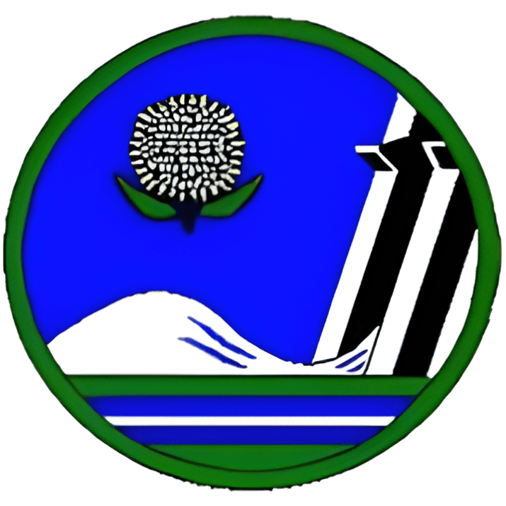

The capital khartoum
The national capital of Sudan, Khartoum State, with its capital city, Khartoum (the national capital), is located in the central part of Sudan, where the White Nile and Blue Nile converge to form the Nile River, the longest river in Africa. The state boasts cultural diversity, as it houses a variety of cultures, tribes, and nationalities from all over the country and neighboring nations. Therefore, the state is considered the most densely populated among the Sudanese states.
The state also benefits from diverse natural resources, including fertile agricultural lands with various crops, covering an estimated area of 583,209 acres, as well as forests, pastures, and water resources from groundwater and rivers, which include a range of dams for energy generation. The state's livestock wealth is estimated at 728,559 animal units.

Administrative division of Khartoum
Administratively, Khartoum State is divided into seven administrative localities:
- Khartoum Locality
- Khartoum North Locality
- Khartoum Bahri Locality
- Jebel Aulia Locality
- Omdurman Locality
- Om Badah Locality
- Sharq an-Nile Locality
Corinthia Hotel and White Nile
Khartoum City

Khartoum City
Omdurman
The banks of the White Nile next to Toti Bridge

Khartuom
Darfur Region
The name Darfur was given to the western part of Sudan in reference to the 'Fur' people who had their own sultanate there before colonization. Among the tribes inhabiting this region are the Fur, Zagawa, Masalit, and others.
The Darfur region is vast, covering an area approximately on-fifth the area of Sudan and it is divided into five state:
- North Darfur with its capital El Fasher
- Central Darfur with its capital Zalingei
- East Darfur with its capital Ed Daein
- West Darfur with its capital Geneina
- South Darfur with its capital Nyala
Darfur is known for its fertile lands, diverse climates, including the cultivation of gum Arabic from acacia trees, cotton and tobacco fields in the southwest, as well as wheat, corn, and sorghum farms. The region is also rich in livestock, including camels, sheep, and cattle, along with petroleum and minerals.

South Darfur
Harry mountain around Dougu Village
South Darfur
Dougu Wadi

Centeral Darfur
Farms in Zalingei
Darfur
Valleys and landscapes throughout Darfur
Centeral Darfur
A waterfall in the Jebel Marra range

Centeral Darfur
Marra mountain
Darfur
Farm

North Darfur
Scenes from one of the countryside
Kordofan Region
Kordofan region is located in central Sudan and is home to various tribes, including the Kababish, Kawahla, Bideiriya, Juhayna, Shuwaheitat, Ghidyat, and Misseriya. The region boasts abundant resources, including fertile agricultural land, forests, and a diverse range of wildlife. It is also known for its oil fields and mineral deposits. Kordofan has some of the most significant markets for gum arabic exports.
The region relies on rain-fed agriculture, producing crops such as sorghum, corn, cotton, hibiscus, sesame, peanuts, and tobacco.
. Kordofan is divided into three states:
- North Kordofan with its capital El Obeid
- West Kordofan with its capital Al Fula
- South Kordofan with its capital Kadugli


Dair mountain
The eastern part of Sudan comprises three states:
. Red Sea State with its capital Port Sudan:
This state serves as a vital maritime gateway through the Port Sudan, known for its mountain ranges, including the Red Mountains. The coastal plain is covered in sedimentary rocks, primarily limestone. Hills and plateaus are found in the western part of the state. The region experiences a dry climate with minimal rainfall during the summer months.
The state has a dry climate with little winter rain. Summer in the state is considerd very hot and very humid2
The most famous tribes in the state are the Ammrar, the Hindua, and the Shariyn
Kassala State and its capital Kassala City:
located in eastern Sudan near the Eritrean border. The state is known for its breathtaking natural landscapes and lush gardens. It hosts several projects, including the Khashm Al-Girba project, as well as sugar cane, wheat, and corn production
The terrain in Kassala varies from sandy plains to seasonal valleys, such as Gash River .in addition to mountainous masses, the most prominent of which are Kassala, Totil and Taka mountains.

The state boasts numerous natural resources, including:
- Abundant water sources from rivers, rainfall, and groundwater.
- Vast and fertile agricultural lands covering over 40% of the state's territory.
- A diverse and vast animal wealth, estimated at around 4.3 million head of livestock, in addition to poultry and fish.
- Forest resources, natural pastures, rich quarries with various minerals, limestone, and granite rocks.
The tribes residing in Kassala include the Hadendowa, Bani Amer, Shukriya, Rashaida, Habab, Fadniah, Shaigiyah Hassu, Hanlagah, and Halfawiyin.
Gedaref State and its capital Gedaref City:
located in eastern Sudan. The state features two distinct climate zones, with the northern and northwestern regions experiencing a semi-arid climate characterized by summer rainfall from July to October. In contrast, the eastern and southern regions fall within a humid climate zone. The state is known for its clayey soil, interspersed with some highlands, which can be categorized into three areas: the southeastern highlands, the plains predominant in the state, and the valley areas, which encompass the alluvial lands around seasonal rivers such as the Atbara River, Setit, Rahad, and Basalam.
The black clayey soil is predominant in the state, known for its high fertility due to a high clay content. Rainfall is a crucial water source in the state, complemented by several water stations and wells.
The majority of the state's population is distributed across five tribes: Shukriya, Dar Aabakr, gala Al-Nahal, Dabaina, and the Agency of Bani Amer. Additionally, there are significant ethnic groups and tribes in the region, including the Masalit, Baggara, Lahaween, and Kanana.

Kasala
Kasla city and Totil Mountains
Kasala
Farm in Kassala city and Mountains
Kassala
City center mosque
كسلا
City center mosque
Red Sea
Port Sudan
Red Sea
Port Sudan City

Red Sea
Mountains around the state

Qadarif
Countryside
Green Pastures
Gezira State and its Capital Wad Madani:
Gezira State is distinguished by its central location in Sudan and is considered the largest source of income for Sudan (the Gezira Project is the largest national project in Sudan). The state is rich in human and natural resources, including extensive agricultural lands throughout the state, forests, and natural pastures.
Most of the state's surface consists of flat plains, with only some hills in certain eastern and southern parts. Generally, the terrain slopes gently towards the north, following the course of the Nile River, including important tributaries like the Blue Nile and Rahad River.
The state falls within the dry climatic belt known for its seasonal rainfall.
Sennar State and its Capital Sennar City:
Located in the southeastern part of the country in the rainy Sudanian belt in the rich Savannah region, Sennar State enjoys a hot and rainy climate. The state's lands are characterized by extensive and semi-flat plains that gently slope northward, representing an extension of the central clay plains.

The Blue Nile flows through the length of Sennar State, serving as a source of electricity generation through the Sennar Dam and the main source of irrigation for major agricultural projects like Gezira. Seasonal watercourses in Sennar State include the Dinder and Rahad Rivers.
Key agricultural crops in the state include cotton, gum Arabic, sunflowers, sesame, mangoes, guavas, bananas, corn, soybeans, and sugar cane, which is central to the state's sugar industry.
Sennar Kingsom: Sennar Kingdom was a prominent Sudanese kingdom from 1504 to 1821, hosting a multicultural and multiracial civilization that extended its influence over surrounding sultanates, kingdoms, and regions in the Kingdom of Alwa, with its capital at Soba.
State of White Nile and its capital Rabak city:
Located in the southern part of Sudan, the White Nile state is a significant source of sugar production in Sudan, housing the Kenana Sugar Factory and the Alsawalih Sugar Factory. The state is also known for oil production, cotton gins, confectionery manufacturing, and white cheese production, along with fish canning. It possesses vast arable lands, with some seasonal agricultural projects depending on rainfall, except for the Um Jar project, which relies on flow irrigation from the Nile waters. The state produces approximately 70% of the total freshwater fish yield in Sudan. In terms of terrain, the soil is clayey in the north and south, while sandy soil dominates the west, interspersed with clayey lands and sand dunes. The surface is generally flat with some undulations in clayey areas. Geologically, the state is characterized by the Um Ruaba Formation, forming a rich aquifer. However, its waters have high salinity levels, and solid bedrocks are prevalent in various parts of the state, especially in the southern and southeastern regions. The seasonal floodplains of the White Nile are a significant feature of the landscape. The state has a dry and semi-arid climate.
State of Blue Nile and its capital Damazine:
One of Sudan's southern states, the Blue Nile is crossed by the Blue Nile River from north to south. It is considered one of Sudan's richest regions in terms of environmental wealth and climatic diversity, with a savanna climate characterized by heavy rainfall. The state is surrounded by extensive woodland and Nile forests, concentrated along the Blue Nile's course and the Angessana Hills, bordering Sennar State, the Blue Nile, and the Gedarif region. Numerous seasonal watercourses traverse the state, including the Tumet, Dahab, and Elias rivers. Acacia trees such as Laot, Andari, Dum, Talh, Hishab, Hajleid, Ardib, Qur'a, and many other tree species are abundant. The state also features a variety of fruit orchards, with widespread cultivation of bananas, citrus fruits, and mango trees.
The society in the Blue Nile comprises various Sudanese tribes, including the Hamaj, Kadalo, Qamaz, Burta, Qabaawin, Dawalah, Ingessana, Riqariq, Sarkam, Jamjam, Burun, Adik, Kanana, Koma, Qanza, Blduwa, Jablawin, Funj, Kamatir, Maban, and Tawait, in addition to Bani Shangul tribes from northern Sudan and groups from western Sudan, such as the Tama, Zaghawa, For, Barqud, and Mima.
Northern State with its capital Dongola:
Located in the north of Sudan, this state is bordered by Egypt to the north and is traversed by the Nile River from north to south. It is the largest state in terms of area and is characterized by date palm farms, vast desert landscapes, and ancient historical sites.
Notable among these is the ancient city of Old Halfa (Wadi Halfa), which traces its history back to the Nubian civilization and is rich in Nubian archaeological relics. Other historic cities include Abri and Kerma, known for their Stone Age heritage and being part of the ancient Nubian kingdoms.
The population consists of diverse ethnic groups, including Shaiqiyah, Bideiriyah, Mahas, Danagla, Habbaniya, Quraysh, Kababish, Hawawir, and Scott. The indigenous people of Dongola city are referred to as Falalih and are divided into several interconnected families.
State of the Nile and its capital, Damir
Located in northern Sudan, the state of the Nile is traversed by the Nile River, which meets the Atbara River near the city of Atbara (Al-Muqrin). The economy of the state relies on livestock, fisheries, traditional and modern agriculture, and it hosts various agricultural projects. The state is known for cement production and the presence of minerals like gold. Additionally, it holds historical significance as it's an archaeological area, including the Bajrawiya region, Naga and Musawarat, where sun temples and lion temples are located.


Northern State
Scenes form around the state
Northern State
Dongola pastures

Northern State
Nubina pyramids
Northern State
Nubian pyramids

Northern State
Old Dongola City

Northern State
Nubian Desert
River Nile
Mosque